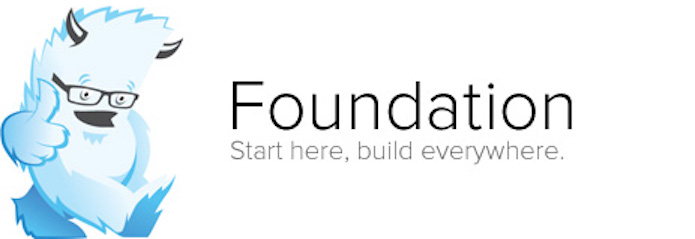

OBJETO VIRTUAL DE APRENDIZAJE
Frameworks CSS Y Posicionamiento Web
FRAMEWORKS CSS
¿Que es un Framework CSS?
Un framework se define como un esquema, una herramienta o una pauta utilizada para desarrollar
el estilo de la pagina web. Ademas, como un framework es un conjunto de herramientas puede
ser reutilizado y evita escribir el codigo de forma repetitiva. Asi es, permite sustituir elementos
predeterminados del navegador y ayuda a hacer el texto accesible en cualquer soporte. Por otra parte,
las hojas de estilo en cascada CSS se utilizan para darle estilo a la pagina web y posicionarla visualmente
mientras que HTML se utiliza para definir la estructura y la semántica del contenido. De modo que cuando
hablamos de Frameworks CSS estamos hablando de las herramientas que permiten darle estilo visualmente
a una pagina web. (Yuste A, Universidad de Alicante. Introduccion al desarrollo web. Recuperado de
http://rua.ua.es/dspace/bitstream/10045/26796/1/CSS%20-%20Frameworks.pdf)
Frameworks mas utilizados
Bootstrap
Es el framework CSS más popular, en 2020, usado en infinidad de proyectos de todo tipo. Cuando apareció
creó una tendencia de frameworks basados en componentes, capaces de implementar temas de diseño completos
y complejos, aportando mucha sencillez y agilidad al desarrollo CSS y dotando a los programadores de
herramientas para crear diseños consistentes con poco esfuerzo. Durante sus años de existencia ha evolucionado
mucho, incorporando novedades del estándar de CSS con rapidez y eliminando dependencias pesadas como jQuery que
a día de hoy es innecesario en la mayoría de los proyectos. Es muy común que las solicitudes de empleo se pida
Bootstrap, ya que es una herramienta usada por muchas empresas.(Desarrolloweb.com. Frameworks CSS. Recuperado de
https://desarrolloweb.com/colecciones/frameworks-css)

Materialize CSS
Materialize es un framework CSS que implementa el tema de diseño "Material Design". Ofrece componetes material
listos para usar, que se pueden integrar de una manera cómoda en los sitios web, consiguiendo un diseño guiado
por las directrices de aplicaciones y sitios de Google. Crea diseños consistentes que son fáciles de entender
y familiares para los usuarios en general. Tiene muchos componentes que también implementan comportamientos
dinámicos con Javascript y recientemente se actualizó para eliminar su dependencia con jQuery. El framework es
sencillo de usar, relativamente ligero, permite optimización y los componentes están altamente personalizados en su diseño.
(Desarrolloweb.com. Frameworks CSS. Recuperado de https://desarrolloweb.com/colecciones/frameworks-css)

Tailwind CSS
Este es un framework CSS que ofrece un enfoque diferente que otros como Bootstrap. Tailwind CSS en realidad no
tiene muchos componentes, sino clases de utilidad que aplicar directamente sobre el CSS. Estos frameworks se llaman
también "utility first" y ofrecen estilos CSS atómicos. Aunque también permite crear componentes, lo deja más del lado
del desarrollador, que los podrá personalizar a su gusto. Tailwind CSS tiene la característica de se muy maleable y
adaptarse muy bien a lo que el desarrollador necesite. Con el framework puedes hacer builds de clases CSS totalmente
personalizadas, que se parezcan o no a las que se ofrecen de manera predeterminada. (Desarrolloweb.com. Frameworks CSS. Recuperado de
https://desarrolloweb.com/colecciones/frameworks-css)

Foundation
Con Bootstrap y Materialize, Foundation es uno de los frameworks CSS basados en componentes más importantes del momento.
Tiene muchos seguidores y mantiene una base de código que se actualiza con frecuencia para incorporar las novedades de CSS.
A diferencia de otros frameworks CSS ofrece un subset de sus herramientas orientado a la creación de emails, que tienen
características de desarrollo distintos que los sitios web. Ofrece un set de herramientas para poder optimizarlo correctamente
y construir un build que incluya solamente los componentes que se desean.(Desarrolloweb.com. Frameworks CSS. Recuperado de
https://desarrolloweb.com/colecciones/frameworks-css)

Clasificación de los Frameworks
Multipropósito
Proporcionan un conjunto de utilidades variadas útiles para distintos aspectos del desarrollo de un diseño web.
Propósito específico
Propósito específico: Están orientados a proporcionar herramientas para un propósito determinado.